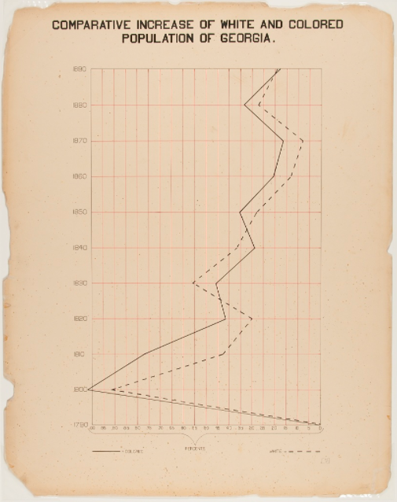
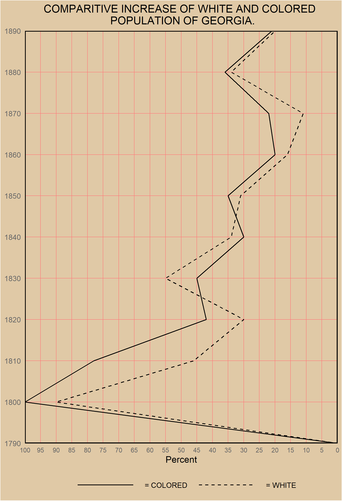

The goal of this challenge was to celebrate the data visualization legacy of W.E.B DuBois by recreating the visualizations from the 1900 Paris Exposition using modern tools.
Here is the original plot that I am attempting to recreate

Here is my recreation
# Load in packages...
library(tidyverse)
library(skimr)
library(naniar)
library(tidytuesdayR)
library(reshape)# Read in the tidy data manually
year <- c(1790, 1800, 1810, 1820, 1830, 1840, 1850, 1860, 1870, 1880, 1890)
colored <- c(0, 100, 78, 42, 45, 30, 35, 20, 22, 36, 21)
white <- c(0, 90, 46, 30, 55, 34, 31, 16, 11, 34, 20)
vars <- c(0, 0, 0, 0, 0, 0, 0, 0, 0, 0, 0)
dat <- data.frame(year, colored, white, vars)
# First im going to melt the variables, this makes them more accesible
dat <- melt(dat, id.vars = "vars", measure.vars = c("colored", "white"))
dat$year <- c(1790, 1800, 1810, 1820, 1830, 1840, 1850, 1860, 1870, 1880, 1890)
georgia_line <-
ggplot(data = dat) +
geom_line(mapping = aes(y = value, x = year, linetype = variable)) +
labs(
title = "COMPARITIVE INCREASE OF WHITE AND COLORED \n POPULATION OF GEORGIA.",
x = NULL,
y = "Percent"
) +
scale_y_reverse(lim = c(100,0),
breaks = seq(0, 100, by=5),
expand = c(0,0)) +
scale_x_continuous(breaks = year,
limits = c(1790, 1890),
expand = c(0,0)
) +
scale_linetype_manual(labels = c("= COLORED", "= WHITE"),
values = c("solid", "dashed")) +
# flipping the traditional coordinates where year on the x-axis to year on the
# y-axis
coord_flip() +
theme(plot.title = element_text(hjust = 0.5),
legend.position = "bottom",
legend.key.width = unit(3,"cm"),
legend.background = element_rect(fill = "#E0C9A6"),
legend.title = element_blank(),
panel.border = element_rect(color = "black",
fill = NA,
size = 1),
plot.background = element_rect(fill = "#E0C9A6"),
panel.background = element_rect(fill = '#E0C9A6'),
panel.grid.major = element_line(color = '#ff7a7a', size = .25),
panel.grid.minor = element_line(color = '#E0C9A6'),
legend.spacing = unit(10, "char"),
legend.key = element_blank(),
axis.ticks.x = element_blank(),
axis.ticks.y = element_blank(),
axis.text.y = element_text(colour = "grey40"),
axis.text.x = element_text(size = 8, colour = "grey40")
)
# saving it so I can adjust dimensions
ggsave("DuBois_Challenge_01.png", georgia_line, width = 5.8, height = 8.5)
